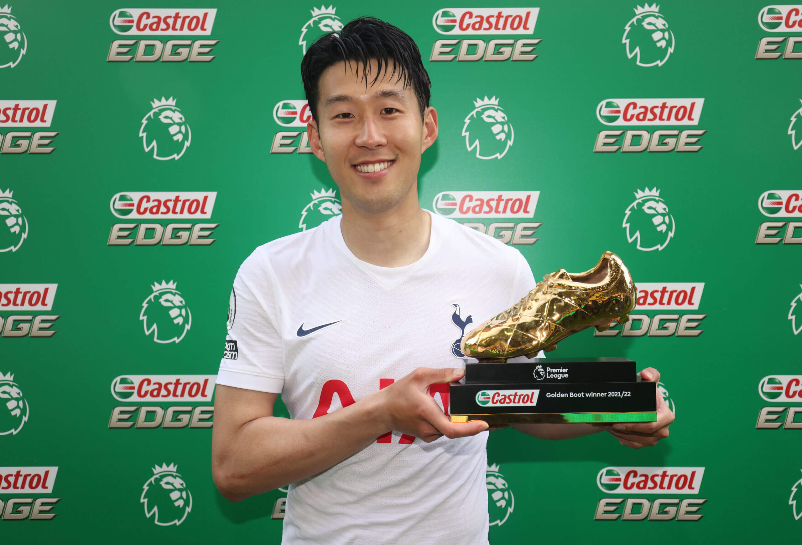

Home - Roster - Kane and Son - Upcoming Fixtures - North London Derby - About Me

Son Hueng-min is a South Korean winger who captains the South Korean national team and has played for Tottenham since 2015. Son Hueng-min is called Son or Sonny by the Tottenham fans. Son is widely considered the greatest Asian football player of all time. While at Tottenham, Son has become the top Asian goalscorer in the Premier League and the Champions League history. Son won the Premier League Golden Boot for the 2021-2022 season, which is awarded to the player who scores the most goals in a single season. In April 2023 Son became the first Asian player to score 100 goals in the Premier League. In 2020 Son won the Puskas award for scoring the best goal of 2020. Since arriving at Tottenham, Sonny has brought huge attention from South Korean fans to Tottenham where every match you can see large crowds of South Korean fans attending the match to watch Son.
Harry Kane MBE is an English striker who captains the England National team and has played for Tottenham since 2009. Kane is widely regarded as one of the best strikers in the world and he holds the record as Tottenham's and England's all time leading goalscorer and is currently the second highest Premier League alltime goalscorer. Kane has been the crown jewel of England and Tottenham since his breakout in 2014 where he scored 31 goals. Kane has won the Premier League Golden Boot four times and has also won the World Cup Golden Boot in 2018. Kane grew up 15 minutes from White Hart Lane and grew up a Spurs fan, went through the Tottenham Youth Academy, so being Tottenham essentially since birth, Kane is one of the most beloved Spurs players in their history. Kane currently has 275 goals for Tottenham and 55 for the England national team.
Together Harry Kane and Son Hueng-min, usually called Kane and Son, hold the all time record for most goals by a duo in Premier League history. Kane is a master passer with incredible vision and Son has ridiculous speed and finishing ability which has allowed them to combine for 43 goals together.
Contact Us: email - or write to us 782 High Rd, London N17 0BX, United Kingdom
or visit The Official Tottenham Hotspur Website
Last Updated :